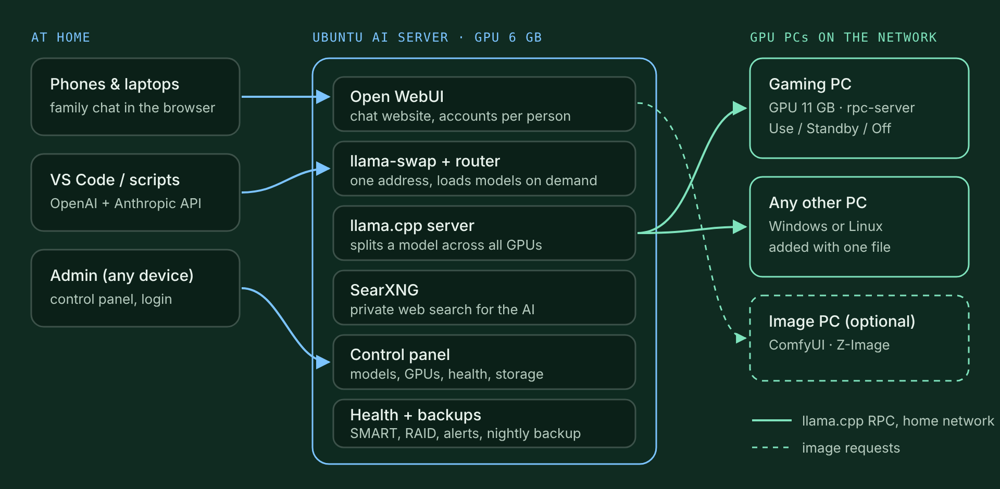

- Hardware
- Ubuntu server with a GTX 1660 Super (6 GB), Windows gaming PC with an RTX 2080 Ti (11 GB), SSD plus a 1 TB HDD, wired home network
- Software
- llama.cpp (RPC), llama-swap, Open WebUI, SearXNG, Docker, ComfyUI; my own scripts in Bash, Python and PowerShell
- Status
- Beta: runs on my home server; open source under the MIT license
- Published
Why I built it #
I wanted one AI that everyone in my family could use for chat, coding help and pictures, running on my own hardware, so the models and the chats stay at home and nobody needs an account somewhere else.
The problem: good models need a lot of GPU memory. My server has a 6 GB graphics card and my gaming PC has an 11 GB one. A 20-billion-parameter model doesn't fit on either card. It does fit on both together. So the core idea of this project is GPU pooling: split one model across the GPUs of several PCs over the home network, and make the whole thing simple enough that the rest of the family never has to think about it.
How it works #


- One server runs everything. An Ubuntu machine runs the chat website, the model manager, web search, the control panel and the health checks.
- Other PCs lend their GPUs. On a Windows PC you download one
.batfile from the server and double-click it. It installs a small llama.cpp rpc-server that starts with Windows, and the server finds the new GPU by itself. - Big models use all GPUs, small ones stay on one. Small models stay loaded on the server for instant answers. Big models are split across every GPU that is allowed.
- Gaming still comes first. Each GPU can be set to Use, Standby (only for big models) or Off from the control panel, for example while someone is playing on that PC.
- “auto” and “team” models. auto picks the right model for each message: pictures go to a vision model, code to a coding model, quick chat to a small fast model. team lets two models answer and a third combine the best answer.
Measured speed #
Each model was asked for a 400-token answer, after it had loaded (the second of two runs). Answer speed is how fast the model writes once it has started.
| Model | Where it runs | Answer speed (tokens/s) |
|---|---|---|
| qwen3.5-4b | Server GPU | 63 |
| gemma-4-12b (vision) | GPU PC | 42 |
| gpt-oss-20b | Split over both GPUs | 57–71 |
| auto | Picks one model per message | 42 |
| team | Two models answer, a third combines | about 2.5 min per answer |
The 20B model is the interesting one: it doesn't fit on either graphics card alone, yet split over both it writes faster than anyone can read. team is slow because three models work on every answer, so it is for questions where quality matters more than speed.
What it can do #
- Chat for the family: Open WebUI with a private account for each person. It works on phones and can be added to the home screen.
- Add a PC in one click: one file on Windows, one command on Linux.
- Add models from the web: search Hugging Face in the control panel, see whether a model fits your GPUs, then click Add. A weekly check suggests newer models that fit.
- Private web search: a self-hosted SearXNG lets the AI look things up without accounts or tracking.
- Live health page: CPU, RAM, GPU temperatures, network, services and drive SMART data, refreshed every 0.5 seconds.
- Drives and RAID: keep models in any folder, on a spare drive, or on several drives as RAID 0, 1, 5 or 10, set up from the control panel.
- Alerts and backups: Telegram messages about disk, RAID or service problems, and a nightly backup of chats and settings.
- Coding assistants: an OpenAI- and Anthropic-compatible API for VS Code extensions and scripts.
- Image generation (optional): ComfyUI with Z-Image Turbo on an NVIDIA PC, used straight from the chat.
The control panel #
Everything is managed from one web page: a single-file Python app that uses only the standard library. It works on any device at home after logging in.
| Tab | What it does |
|---|---|
| Models | Search Hugging Face, check the fit, add, rename or remove models, follow downloads |
| GPUs | Every GPU in the house with live memory use; set Use / Standby / Off and give each a name |
| Health | Live server status, services, drive SMART data with self-tests, RAID state |
| Storage | Choose a folder, one drive or a RAID for the models; erasing needs “ERASE” plus the admin password |
| Add a PC | The download link and the Linux command for new GPU PCs |
| Settings | Telegram alerts, devices allowed to use the API, password, logged-in devices |
Security decisions #
- Home network only. The firewall accepts connections from the home network only. Nothing is opened to the internet.
- Workers trust one machine. The GPU PCs only accept model traffic from the AI server.
- A real login for the admin panel. Passwords are hashed with PBKDF2, sessions use HttpOnly cookies, and only 5 failed tries are allowed in 10 minutes. The first password needs a one-time setup code.
- Least privilege. The panel runs as a normal user and may run only three small root helpers. It can never touch the system disk.
- No data on the gaming PC. It only lends its GPU while it is switched on. All models and chats stay on the server.
Problems I ran into #
Search engines block home servers #
Google refused the server's searches and DuckDuckGo answered with CAPTCHAs. Google's own search API is closed to new users. SearXNG with Brave as the main engine turned out to be the reliable choice.
A new drive that wouldn't mount #
After formatting a new hard drive, the system's cached drive ID was out of date and the mount failed. Reading the ID straight from the disk (blkid -p) and mounting by UUID with nofail fixed it, and the server still starts if the drive is missing.
A restart that never finished #
The chat container checked for an update every time it started, and it hung on a large download. Updates are now a separate step that downloads first and swaps afterwards.
Windows and Linux line endings #
One wrong kind of newline breaks a Windows .bat file or a Linux script. A .gitattributes file now gives each file type the right line endings, whichever computer it is edited on.
Live dashboards without flicker #
Refreshing every 0.5 seconds kept redrawing the page and swallowed clicks. The panel now only redraws parts that actually changed, never overlaps requests, and pauses while you click.
Try it yourself #
On a machine with Ubuntu Server 24.04 or newer:
git clone https://github.com/shafakat12/home-ai-cluster.git
cd home-ai-cluster
sudo bash install.shThe installer finds the GPU, picks starter models that fit, asks where to store them, and at the end prints the addresses and a one-time setup code for the control panel. To add a Windows PC, open http://SERVER-IP:8090/add-this-pc.bat on it and double-click the file.
I built it step by step on my own home server with help from an AI coding assistant (Claude). I decided what it should do, ran and tested it on my hardware and measured the speeds; the AI helped write much of the code and the documentation.
The project is open source under the MIT license. It is built on llama.cpp, llama-swap, Open WebUI, SearXNG and ComfyUI, each under its own license.